A Parameterized Elliptic Partial Differential Equation
We examine a linear elliptic partial differential equation in two spatial dimensions with homogeneous Dirichlet boundary conditions and parameterized scalar coefficients. For 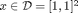, let 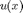 satisfy
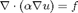
with 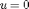 on 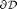, where 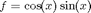 is the forcing function, and
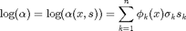
is the parameterized coefficient representing a truncated Karhunen-Loeve expansion of a random field with covariance function
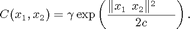
The parameter 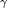 scales the magnitude of the random field, and 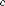 controls the correlation length. For more details on this problem, see Nobile, et al. (SINUM, 2008a) and references therein.
Using MATLAB's PDE Toolbox, we discretize this problem in space on an irregular mesh. This results in a parameterized matrix equation
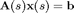
where 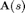 is the parameterized stiffness matrix. We will use PMPack to construct a multivariate polynomial approximation to the solution 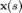.
Contents
Construct The Problem
We set the truncation level 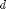 and correlation length of the random field and call elliptic_func to generate the parameterized matrix interfaces. The truncation level determines the dimension of the multivariate polynomial approximation. See the documentation for ellitic_func for details.
d = 4; c = 2; P = elliptic_func('trunc',d,'corr',c');
Created a mesh with 177 nodes.
Plot the finite element mesh.
pdemesh(P.mesh.p,P.mesh.e,P.mesh.t);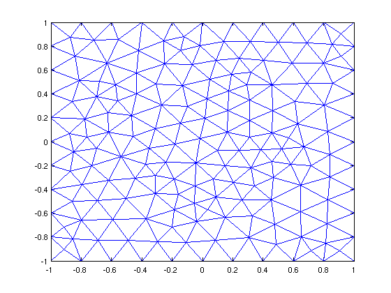
Plot the singular values of the Karhunen-Loeve expansion of the coefficients to see their decay.
figure; plot(1:d,P.KL.sv,'ro','MarkerSize',14); ylabel('Singular Values of the KL Expansion'); xlim([0 d+1]);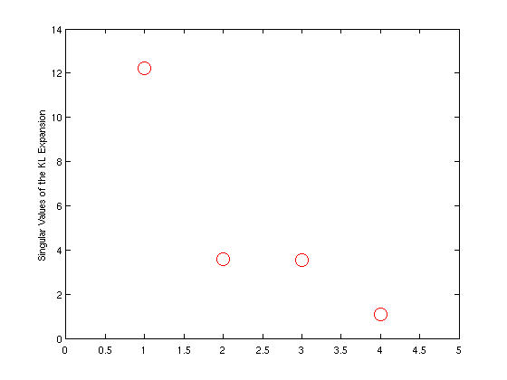
Construct a Spectral Galerkin Approximation
We use the spectral_galerkin function to construct the multivariate polynomial approximation with a full polynomial basis. We will employ a cubic polynomial approximation. We explicitly specify the solver as conjugate gradient since we know the Galerkin matrix is symmetric in this case.
pOrder = 3; % the order of polynomial approximation % construct the solver pcgtol = 1e-6; pcgmaxi=1000; solver = @(A,b) pcg(A,b,pcgtol,pcgmaxi); tic [X,error1] = spectral_galerkin(P.A,P.b,P.s,3,'Solver',solver); t1 = toc;
pcg converged at iteration 343 to a solution with relative residual 9e-07
Coefficient Decay
To get an idea of the quality of the cubic approximation, we can plot the 2-norm of the vector of coefficients associated with each polynomial term. We order the coefficients by total order of the basis polynomial
figure; semilogy(sum(X.index_set),sqrt(sum(X.coefficients.^2)),'bo','MarkerSize',14); xlabel('Order of Polynomial'); ylabel('2-norm of the Polynomial Coefficients'); xlim([-1 pOrder+1]);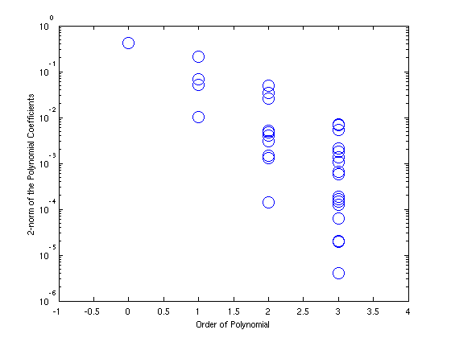
Surface Plot of Mean and Variance
We next plot the mean and variance of the approximation.
Xmean = X.coefficients(:,1); figure; pdesurf(P.mesh.p,P.mesh.t,Xmean); view(2); colorbar; title('Mean of Solution'); Xvar = sum(X.coefficients(:,2:end).^2,2); figure; pdesurf(P.mesh.p,P.mesh.t,Xvar); view(2); colorbar; title('Variance of Solution');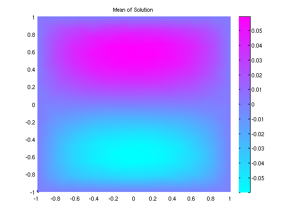

Using a Preconditioner
We can run the spectral Galerkin code again using a preconditioner to see if it helps speed the solver. We will precondition by parameterized matrix evaluated at the midpoint of the pararameter space.
s_mid=midpoint(P.s); % find the midpoint of the domain R=chol(P.A(s_mid),'lower'); % compute the Cholesky factor % set up the preconditioned conjugate gradient solver pcon1=@(x) galerkin_preconditioner(R',x); pcon2=@(x) galerkin_preconditioner(R,x); solver=@(A,b) pcg(A,b,pcgtol,pcgmaxi,pcon1,pcon2); tic [X,error2] = spectral_galerkin(P.A,P.b,P.s,pOrder,'Solver',solver); t2 = toc;
pcg converged at iteration 247 to a solution with relative residual 9.9e-07
Construct a Pseudospectral Approximation
We can compare the spectral Galerkin approximation with the full polynomial basis to the pseudospectral approximation using a tensor product basis.
tic [X,error3] = pseudospectral(P.solve,P.s,pOrder); t3 = toc;
We again plot the decay of the pseudospectral coefficients that are comparable to the Galerkin approximation.
indz = find(sum(X.index_set)<=pOrder); figure; semilogy(sum(X.index_set(:,indz)),sqrt(sum(X.coefficients(:,indz).^2)),'bo','MarkerSize',14); xlabel('Order of Polynomial'); ylabel('2-norm of the Polynomial Coefficients'); xlim([-1 pOrder+1]);
Finally we output the results of the study.
fprintf('\n\n==== RESULTS ====\n'); fprintf('Galerkin w/o preconditioner:\t Time: %4.2e\t Error: %6.4e\n',t1,error1); fprintf('Galerkin w/ preconditioner:\t Time: %4.2e\t Error: %6.4e\n',t2,error2); fprintf('Pseudospectral:\t\t\t Time: %4.2e\t Error: %6.4e\n',t3,error3);
==== RESULTS ==== Galerkin w/o preconditioner: Time: 7.48e+01 Error: 3.5078e-03 Galerkin w/ preconditioner: Time: 7.38e+01 Error: 3.5078e-03 Pseudospectral: Time: 1.01e+00 Error: 3.5379e-03